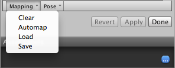

Avatar Mapping tab
After you save the scene, the Avatar Mapping tab appears in the Inspector displaying Unity's bone mapping:

- (A) Buttons to toggle between the Mapping and Muscles & Settings tabs. You must Apply or Revert any changes made before switching between tabs.
- (B) Buttons to switch between the sections of the Avatar: Body, Head, Left Hand, and Right Hand.
- (C) Menus which provide various Mapping and Pose tools to help you map the bone structure to the Avatar.
- (D) Buttons to accept any changes made (Accept), discard any changes (Revert), and leave the Avatar window (Done). You must Apply or Revert any changes made before leaving the Avatar window.
The Avatar Mapping indicates which of the bones are required (solid circles) and which are optional (dotted circles). Unity can interpolate optional bone movements automatically.
Saving and reusing Avatar data (Human Template files)
You can save the mapping of bones in your skeleton to the Avatar on disk as a Human Template file (extention *.ht). You can reuse this mapping for any character. For example, you want to put the Avatar mapping under source control and you prefer to commit text-based files; or perhaps you want to parse the file with your own custom tool.
To save the Avatar data in a Human Template file, choose Save from the Mapping drop-down menu at the bottom of the Avatar window.

Unity displays a dialog box for you to choose the name and location of the file to save.

To load a Human Template file previously created, choose Mapping > Load and selecr the file you want to load.
Using Avatar Masks
Sometimes it is useful to restrict an animation to specific body parts. For example, an walking animation might involve the character swaying their arms, but if they pick up a torch, they should hold it up to cast light. You can use an Avatar Body Mask to specify which parts of a character an animation should be restricted to. See documentation on Avatar Masks for further details.